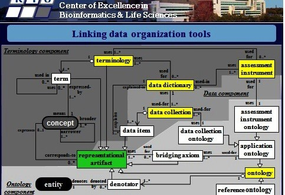

July 2012
"... and you can take apart the data later with reliable provenance information" @gotsemantics w3.org/QA/2012/07/int… #linkeddata
"I want data ... that has been engineered to integrate easily with other data" @gotsemantics w3.org/QA/2012/07/int… #linkeddata
Excellent @w3c interview with @gotsemantics (Ora Lassila) on Web Apps Powered by #LinkedData w3.org/QA/2012/07/int…
MT @vrandezo: What will the #SemanticWeb look like in 10yrs? We want your input stko.geog.ucsb.edu/sw2022/ #iswc2012 #semweb #LinkedData
+1 RT @ibmrational: #LinkedData Part 2: Using a single repository to manage all the data is unrealistic bit.ly/LSVmio
Reading @bioitworld's interview of my new boss @john_reynders bio-itworld.com/news/07/25/12/… - great to see "semantics" mentioned
Talking about "Swedish standards" +1 RT @HuffPostBlog: Do Swedish women "have it all"? huff.to/MUGwYq via @natalbrz
On my reading list for next week when I'm back in office > MT @ProfLHunter: The roll-out of BFO 2.0 at #icbo bit.ly/OBQ8Do
@Chris_Evelo Thx. And I guess hope for more also in this one: Bringing epidemiology into the Semantic Web kr-med.org/icbofois2012/i…
"SDTM is not a database (design), it is a VIEW on a database." Blog post cdiscguru.blogspot.se/2012/07/is-sdt… by Jozef Aerts (XML4Pharma) #CDISC
Looking forward to see paper & presentation on this >> MT @icbo2012: Network of Epidemiology-Related Ontologies - (NERO) #icbo
I couldn't make it to the Int Conference on Biomed Ontology this year. Will follow it via kr-med.org/icbofois2012/i… #icbo @ICBO2012
+1 "Sharing is usually a matter of degree not a public-private distinction" @ldodds blog.ldodds.com/2012/07/20/dat… #opendata
+1 Linked Enterprise Data #LED #LinkedData >> RT @ivan_herman: DERI and Fujitsu Team On Research Program feedly.com/k/OCa78u
Heading to the mountains in Norway. Follow our hiking tour in Rondane national park english.turistforeningen.no/english/locati… via @kerfors_swe (in Swedish)
#bosc2012 keynote: building software that *gets adopted* @CaroleAnneGoble slidesha.re/PYleMt via @kristiholmes @ctitusbrown
@nopiedra @frankolken Checkout new OBO Relations Ontology code.google.com/p/obo-relation… More info: @ICBO2012 I hope
@JeniT This is a nice @Storify: Wiring the semantic web by means of linked data storify.com/xdurana/elag20… by @XDurana #KnowledgeGraph
Well put >> Blog post by @timhodson Nobody has given up on Linked Data j.mp/P4Cj4A #LinkedData #SemanticWeb
Friday afternoon, but will try to keep an eye on #bioontologies 2012 bio-ontologies.org.uk/programme/ and #ISMB iscb.org/ismb2012/
MT @kendall: Why will #SemanticWeb win behind the firewall instead of in front of it? Because that’s where the incentives exist. Period.
After a day off repainting the house and some BBQ it's nice to catch up on #IOGDC Thx @BernHyland @tkb @PeterSpeyer @jahendler
+1 MT @niklasl: An introduction to Linked Data (and RDFa) in Swedish slideshare.net/niklal/lnkad-d… #linkeddata #ldsv
#Euphoria in Emotion Ontology ow.ly/c984G and with @LOREEN_TALHAOUI youtube.com/watch?v=Z4PMQB… #allsang :)
@jpmccu Thanks - will catch up on FRIR. Have used the Facade pattern in simliar way for metadata items slideshare.net/kerfors/design… cc; @BVatant
@Jenz514 Great article on schema.org and web intents. Would be nice with a link to the video youtube.com/watch?v=O1YjdK…
MT @mhausenblas: Come Together: #SchemaOrg and #WebIntents Make For Win-Win Opportunities semanticweb.com/come-together-… via @SemanticWeb
+1: Using #FRBR work / expression / manifestation for versions of vocabs. blog.hubjects.com/2012/07/frbr-i… by @BVatant #LinkedData
Reading Janna Hastings' recent blog posts: bioontology.ch (Interlinked bio-ontologies for knowledge-based data-driven science)
Watching - How to Build Apps that Love Each Other with #WebIntents youtu.be/O1YjdKh-rPg via @mhausenblas
My favourite: "Data matures like wine, applications like fish" > RT @datamarket: The 11 Best Data Quotes: bit.ly/NbYsw1
@SciBitely Hi, just saw your retweet on webintens - Checkout webofdata.wordpress.com/2012/07/08/sch… in combination with blog.schema.org/2012/06/health…
@AdamLeadbetter see also this paper of the same authors together w Jim and Deb from RPI tw.rpi.edu/web/doc/Analys…
MT @PHUSETwitta: So many Standards, so little time: bit.ly/NoZZvn << Hence #CDISC should use standards for their standards
Will have to catch up on #FDA's Janus Clinical Trials Repository (CTR) Project fda.gov/ForIndustry/Da… << Huge UML model :-(
Note to self: Add @gothwin's nice data.gov.uk/blog/what-is-l… to my #LinkedData page kerfors.blogspot.se/p/linked-data-…
MT @AdamLeadbetter: When does sameAs not mean sameAs? ontologydesignpatterns.org/wiki/Community… #LinkedData #SemanticWeb
On my to-read-list: Measuring Health: A Guide to Rating Scales and Questionnaires a4ebm.org/sites/default/…
Checkout slide 11: Linking data org. tools referent-tracking.com/RTU/sendfile/?… #ontology #terminology #datadictionary

Immunology Ontologies and Their Applications in Processing Clinical Data bioontology.org/wiki/index.php… /via @mcourtot
Like the idea to use owl:differentFrom much more > RT @ldodds: Four Links Good, Two Links Bad? blog.ldodds.com/2012/07/03/fou… #linkeddata
Make them http-based URI:s > MT: @ihealthbeat: FDA proposes unique medical device id:s (UID) 1.usa.gov/Oit4xt via @motorcycle_guy
@US_FDA #LinkedData principles & #SemanticWeb standards improve usability of #OpenData data.gov/communities/no… /cc @georgethomas
Dear @US_FDA, may we hope for simular Linked Open Data efforts from you as from EPA? data.gov/communities/no… #LinkedData #opendata
+1 RT @structD: The Rationale for Semantic Technologies: feedproxy.google.com/~r/AI3_Adaptiv… #linkeddata #semanticweb
When will #FDA do the same? >> RT@SemanticWeb: EPA to Publish Linked Open Data - bit.ly/LKOSkF #linkeddata #lod #egov